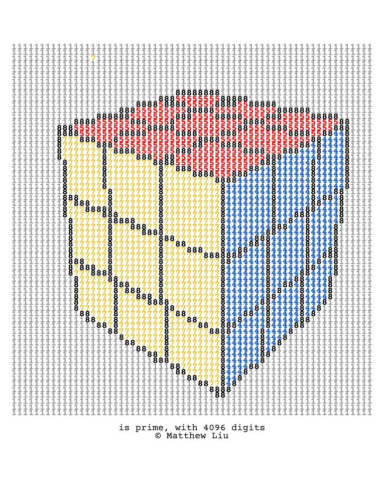
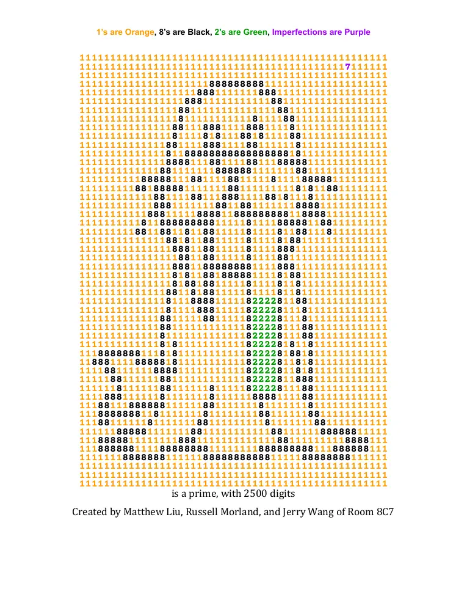
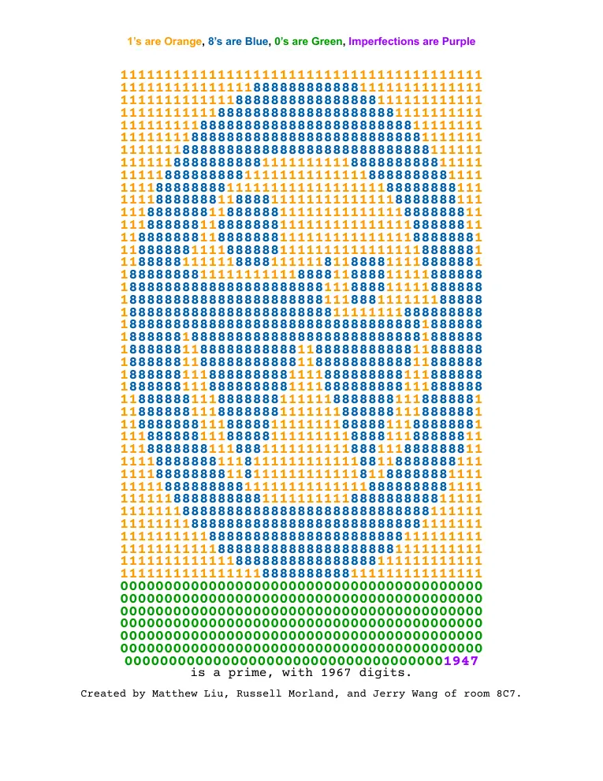

Rubik's Cube Prime
A 4,096-digit prime arranged in a 64 × 64 square using the digits 1, 4, 5, 7, and 8.
View PDFI've always been fascinated by prime numbers, so much so that it alone was enough to motivate me to study math in university.
Prime numbers are incredibly rare, especially very large ones.
Here is a collection of interesting, large, or artistic primes that I've found.

A 4,096-digit prime arranged in a 64 × 64 square using the digits 1, 4, 5, 7, and 8.
View PDF
A 2,500-digit prime arranged as a walrus.
View PDF
A 1,967-digit prime arranged as the Waterloo Region District School Board logo.
Prime numbers of the form k × 2n + 1.
Repeating Digits or Patterns, and primes with no 7s
Further prime-number records from the collection.